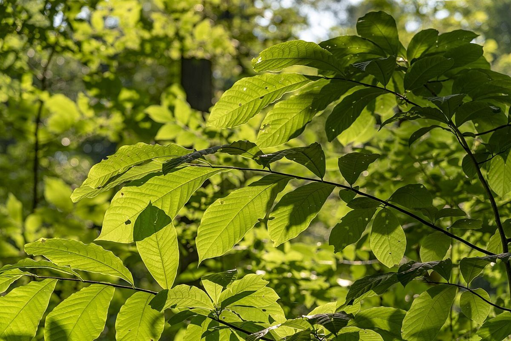

二画め
店のこと
お店について確認できているのは、所在地とInstagramのアカウントだけです。
このページの「想像してみる」部分は、制作側が想像して書いたものです。お店の実際の様子・考え・メニューとは関係がありません。
確認できていること
- 店名は「文欒」(カフェ)
- 所在地は北海道旭川市南6条通19丁目2182-103
- 電話番号はなし。連絡はInstagramから
- 営業時間・定休日・メニュー・価格・ご予約・駐車場は準備中
想像してみる
画数の多い字のように
屋号の意味は分かりません。制作側は、4画の字と23画の字が並ぶ屋号から、すっきりした部分と細かく入り組んだ部分が同居する字面かもしれない、とだけ連想しました。お店の姿については何も分かっていません。下の写真は、その連想から「重なり」や「きめ」のイメージで選んだ素材です。
